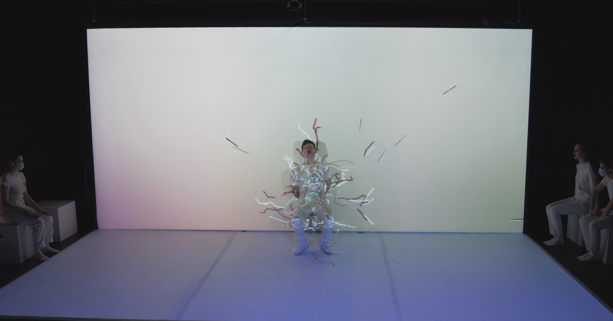
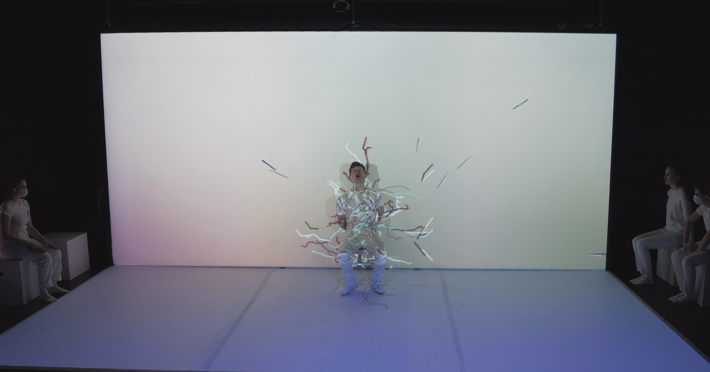

Human-computer Interaction
Unity, OpenCV, HTC Vive, Leap Motion, Kinect, Tobii eye tracker
1984

 

1984 is a theater adaptation of George Orwell's novel, where the dystopian landscape is reimagined with modern technologies. Directed by Clay Hopper.
I designed and developed interactive projections for the Ministry of Truth scene with openFrameworks and Kinect, and also created renders for Ministry of Love scene.
ofxFaceTracker experiments
These visual sketches are created with ofxFaceTracker. The first mimics the effect of breath condensed on glass surface when we exhale, the second portrays a rather comical effect of swirly eyes in animations, and the third is a ofxBox2d test using facial features as obstacles that bodies can bounce off.
Virtual Jenga
Surrounded by skyscrapers made from vertically stacked blocks, which resemble the look of jenga, players can shoot bullets into the architecture with their controllers and experience the apocalypse within the virtual environment.
Virtual Ball Pit
Implemented with Leap Motion, the experiment Virtual Ball Pit challenges players to touch intangible, nonexistent objects with their hands in a tangible, virtual environment.